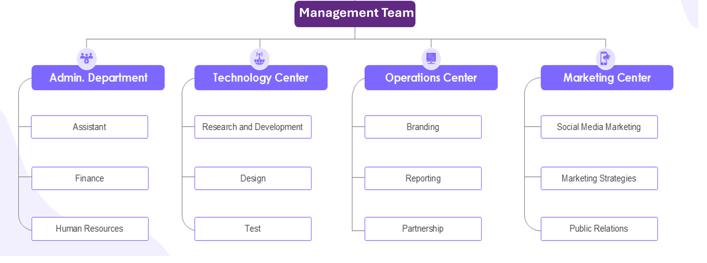

Our History
Barnksforte Technologies Limited was Founded in 2012, Barnksforte Technologies Limited is a Nigerian-based technology solutions company established with the goal of bridging the digital gap across Africa. The company was created to address the growing demand for innovative and indigenous technological solutions tailored to African businesses, institutions, and governments. Over the years, Barnksforte has grown to become a leading provider of identity management, ICT consulting, software development, and infrastructure deployment services in Nigeria and beyond. The company has successfully partnered with public and private sector institutions to implement large-scale tech projects, especially in identity verification, data protection, and digital transformation. Barnksforte is renowned for its touchless biometric system, VERXID, which is used for secure identity authentication, especially in financial and government sectors. Other notable solutions from the company include Geonotifeye, a geofencing technology, TiQit, a smart ticketing system, and QuidPay, a payment solution platform. The company continues to grow and expand its portfolio, driven by a vision to deliver innovative, reliable, and scalable technology solutions across Africa and internationally.
Organogram
Our Mission
To facilitate infrastructure, human, knowledge management, and technology transfers for sustainable economic development in Africa. Our mission is to provide excellence, value, and satisfaction to our clients.
Our Vision
To be a leading provider of innovative development solutions across Africa & globally. We aim to succeed in both the technical aspects of our projects and the strategic ones.